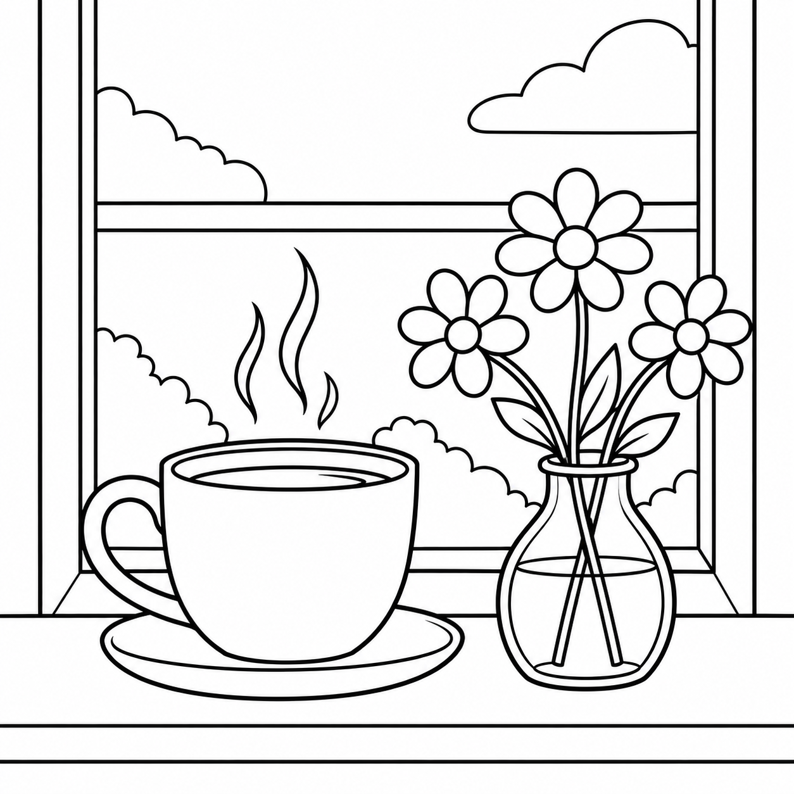
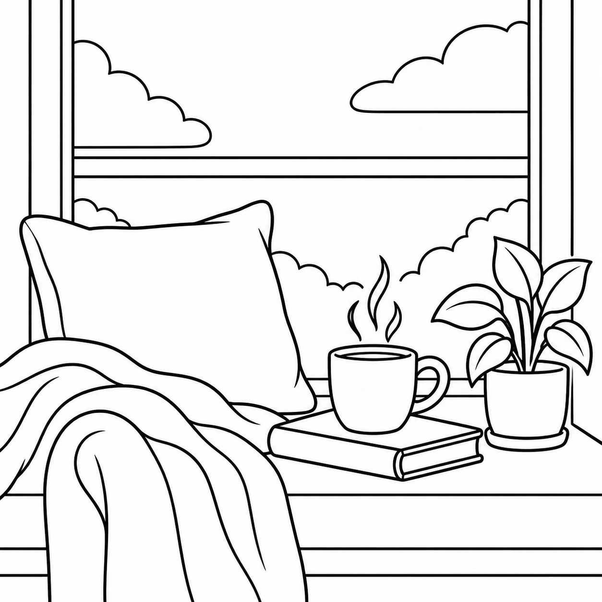
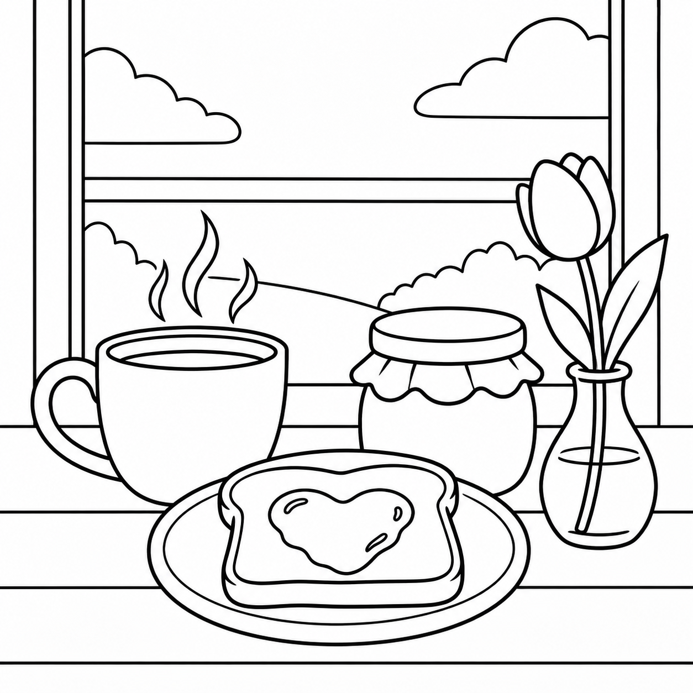
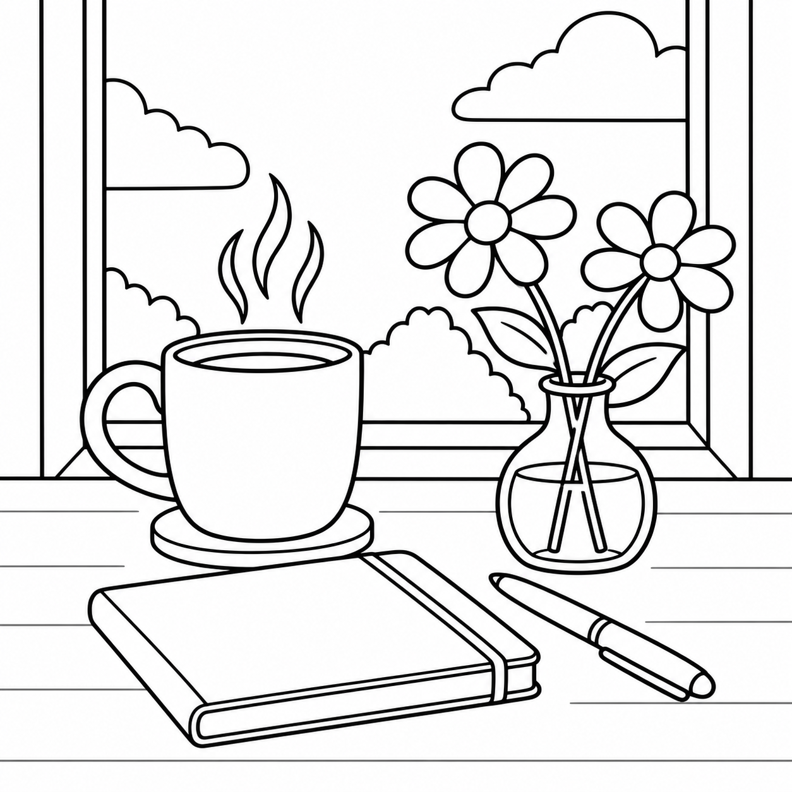

絵心ゼロ・文章ゼロ・英語ゼロでも大丈夫
AI × ぬりえ本 販売ガイド ＋そのままコピペで使えるプロンプト
＼ 在庫リスク0で、あなたのぬりえ本をAmazonに並べる ／

AI×SNSで在宅収入を叶える主婦
みな @mina_ai_fukugyo
🫧 こんな気持ち、抱えていませんか？
-
😔
レジで合計金額を見るたびに小さくため息。
毎月のやりくりに、ずっと余裕がない -
😔
「子どもがやりたいことは、全部やらせてあげたい」
でも外に働きに出るまとまった時間はない -
😔
在宅の仕事に興味はあるけれど、
「これといったスキルがないから」と最初の一歩が踏み出せない
その悩み、「AIぬりえ販売」で解決できます！✊
線画のイラストはAIにおまかせ。ストーリーもセリフも要りません。
子どもを寝かしつけたあとの30分を、コツコツ積み上げるだけ。
なぜ、絵本より「ぬりえ本」から始めるのがいいのか
- ◎物語を書かなくていい：必要なのは「1ページ＝1モチーフの線画」だけ。文章が苦手でも関係ありません。
- ◎ページを量産しやすい：1枚のスタイルが決まれば、あとはモチーフを変えるだけ。12ページでも1テーマで通せます。
- ◎ニッチが細かく分かれている：大人の塗り絵・ボタニカル・マンダラ・北欧柄・動物・和柄・季節行事…。空いている棚がまだあります。
- ◎在庫を持たない：印刷・梱包・発送はすべてAmazon（KDP）任せ。注文が入ってから1冊ずつ印刷されます。
ぬりえ本、実はしっかり売れています
Amazonで「大人の塗り絵」「子ども ぬりえ」と検索すると、個人が作った本がずらりと並び、
レビューが数十件ついている本もめずらしくありません。
価格の目安
1冊 800〜1,500円
レビュー
50件超の本も
とくに大人の塗り絵は「シリーズで買い足される」のが強み。1冊気に入ってもらえると、次の号も手に取ってもらいやすくなります。今のうちに動き方を知っておくのがおすすめです。
たった5ステップで、Amazonに並ぶまで 🎉
リサーチ
1枚試作
12P量産
Canva製本
KDP販売
売れてるものを調べる → テーマを決めて1枚だけ試す → 良ければ12ページに増やす → 本にする → 出す。
いきなり量産しないのがコツです。
🔍 売れてる塗り絵をリサーチする
いきなり作り始めず、まず「今、何が売れているか」を知ることから。
ChatGPTでも大まかな傾向はつかめますが、より確実に調べたいときは
Web検索ができるAI（検索機能ONのChatGPT、Perplexity、Gensparkなど）がおすすめです。
あなたは、Amazonのぬりえ本市場にくわしいリサーチ担当者です。 Amazon.co.jpで「塗り絵」「大人の塗り絵」「coloring book」などのキーワードを 検索し、実際の商品ページをもとに市場調査をしてください。 【私の状況】 ・興味のある方向性：［ 例：ボタニカル・マンダラ・動物など、なんとなくでOK ］ ・想定読者：［ 例：仕事や育児の合間に5〜15分で気分をリセットしたい20〜40代女性 ］ 【調べてほしいこと】 1. レビュー数が多い（30件以上が目安）本を5〜10冊ピックアップし、 「テーマ・モチーフ」「タイトルの付け方」「価格」「ページ数」を一覧化 2. そこから見える「売れているテーマの傾向」を3つに整理 3. 逆に「本の数がまだ少なく、今から狙えそうなニッチ」を3つ提案 （それぞれ理由を一言） 表の形式で出力してください。
🎨 テーマを決めて、まず1枚だけ試作する
リサーチ結果から、需要がありそうなテーマを1つに絞ります。
いきなり全ページ作らず、お試しで1枚だけ線画にしてみるのがポイント。
同じチャットで続けて送ってください。
さきほどのリサーチ結果をもとに、私が作るぬりえ本のテーマを 1つに決めたいです。 【お願い】 1. リサーチで見つけたニッチの中から、私の条件に一番合うものを1つ選び、 理由を3行で 2. 選んだテーマのコンセプトを一言で（例：「〇〇な人のための、△△ぬりえ」） 3. まずはお試しで1ページ分だけ作ります。そのテーマに合うモチーフを1つ選び、 画像生成AIに入れる「線画（ぬりえ）用の英語プロンプト」を1つ作成してください。 【線画の条件（英語で記述）】 ・black and white line art / coloring book page ・clean bold even outlines, no shading, no grayscale, no fill ・plenty of white space to color, simple background ・centered composition, printable, high contrast ・aspect ratio 1:1 ・線の量：［ 例：ざっくり塗れる太めの線（初心者向け）／ 細かめでじっくり没入（マンダラ等） ］ 日本語のモチーフ説明と、英語プロンプトをセットで出してください。
① 線が切れている／薄すぎないか（印刷で消えます）
② 影やグレーが入っていないか（入っていたら「no shading, pure white background」を足す）
③ 細かすぎて塗れない部分がないか
④ 自分がそのテーマを「あと11枚分」考えられそうか
✏️ 1枚OKなら、12ページ分に量産する
お試しの1枚が気に入ったら、同じスタイルのまま12ページに増やします。
ここでも同じチャットで続けて送るだけでOKです。
1枚目の線画、いい感じでした。このスタイルのまま、本1冊分 （12ページ）に増やしたいです。 【お願い】 1枚目と同じ「線の太さ・構図の余白・雰囲気」を保ったまま、同じテーマの 中で違うモチーフを11個選び、画像生成AI用の英語プロンプトを合計12ページ分 つくってください（1枚目もあわせて12ページ）。 【モチーフの並べ方】 簡単なもの → やや凝ったもの の順に、少しずつ難易度が上がるように並べる 【出力フォーマット】 - ページ番号 - 日本語のモチーフ説明（1行） - 画像生成AIに貼り付ける英語プロンプト まず 1〜4ページ分を出力してください。残りは「続き」と言ったら出してください。
📐 Canvaで1冊の本に組む
線画がそろったら、Canvaでページを並べていきます。
絵本と違って文字はほぼ不要。配置のルールだけ守ればOKです。
「カスタムサイズ」で 21.59×27.94cm（8.5×11インチ） を作成（KDPで定番のサイズ）
線画は各ページ中央に、周囲1.5〜2cmの余白を残して1枚ずつ配置
裏写り対策で、絵は奇数ページだけ／偶数ページは白紙にするか、本文を「片面印刷」で作る
最初に中扉（タイトルページ）、次に「この本の使い方」1ページを入れると親切
表紙は別データで作成（塗った状態の見本や、色つきのタイトルで華やかに）
本文・表紙をそれぞれ PDF（印刷用） でダウンロード
🌷 表紙のタイトル案は、このあとのプロンプト④でまとめて出せます。
📦 Amazon KDPで販売する
PDFができたら、いよいよAmazonへ。
Amazon KDP 公式サイト
KDPアカウントを作成し、「ペーパーバック」を選択
タイトル・著者名・紹介文・キーワード7枠・カテゴリーを入力
本文PDFと表紙PDFをアップロード → プレビューで全ページ確認
価格を設定（目安 900〜1,500円）して販売を申請（KDPの「出版」ボタン）。審査はおおむね数日
私のぬりえ本の、Amazon商品ページ用のコピーをまとめて作ってください。 【本の内容】 ・テーマ：［ ］ ・想定読者：［ 例：手を動かしてストレス発散したい20〜40代 ］ ・ページ数：［ 例：本文12ページ（線画12点） ］ ・特徴：［ 例：線が太めで塗りやすい／片面印刷で裏写りしにくい ］ 【出してほしいもの】 1. タイトル案 10個（全角25字前後・内容に嘘を足さない・「大人の塗り絵」等の検索語を自然に含める） 2. サブタイトル案 5個 3. 紹介文（商品説明）2案：それぞれ200〜300字。1案は「読者の悩み」から、 1案は「この本で過ごせる時間」から書き出す 4. KDPキーワード7枠の候補（検索されそうな語を、重複しないように） 5. 想定カテゴリー 2つ 最後に、いちばん推せるタイトル＋紹介文の組み合わせを1つ選び、理由を教えてください。
今作ったぬりえ本を「1冊で終わらせない」ための計画を立ててください。 【前提】 ・1冊目のテーマ：［ ］ ・読者：［ 例：ストレス発散したい20〜40代 ］ 【お願い】 1. 同じ読者がそのまま買い足したくなる「続刊テーマ」を6つ、季節や難易度の バリエーションで提案（例：春の花 → 夏の花 → 秋 → 冬 → 花束 → 世界の花） 2. シリーズ共通で使える「ブランド名（叢書名）」案を5つ 3. 表紙で “シリーズ感” を出すための、変える要素・変えない要素の整理 4. 2冊目を最短で出すために、1冊目の作業から流用できるものリスト 表にまとめてください。
🎨 実際にChatGPTで作ったぬりえページ
このガイドのSTEP1〜3と同じ流れで作った線画サンプルです。
加工なしでこのクオリティが出ます。




👉 スワイプでもっと見れます
「白黒・均一な太さの輪郭線・影なし・塗る余白たっぷり」の条件を守るだけで、
誰が作ってもこの仕上がりになります。
⚠️ ここで、正直にお伝えしたいことがあります。
ここまで読んで「手順が分かったから、自分でもできそう」と感じたかもしれません。
でも実は、「やり方を知っていること」と「続けて収入になること」は別物なんです。
どのテーマ・難易度なら「今」買われるの？
表紙とタイトルで「選ばれる」本と、埋もれる本の差は？
1冊で止めず、シリーズで安定した収入にしていくには？
このあたりでつまずいて、そっと諦めてしまう方がいちばん多いんです。🥺
最後に、私自身の話を少しだけ
💔 私も、遠回りだらけでした
自己流で副業に手を出し、気づけば
150万円を失うところまでいきました。
「私にはセンスがないんだ」と布団のなかで一人泣いた夜は、数え切れません。
子どものささやかなおねだりに、笑って応えられない自分が情けなかった。
✨ そこから抜け出せたのは「型」を知ってから
試行錯誤の末にたどり着いたのは、
「AIを賢く使って、手堅くお家で収入をつくる実践ノウハウと神テンプレート」でした。
今のあなたと私の違いは、才能ではありません。
「成果が出る『型』を知って、
失敗を避ける道を選んだかどうか」
本当に、それだけなんです。
時間を切り売りする内職ではなく、
「AIとSNS」を賢く味方につけて
長く家庭を支える収入源を育てる。
それが、家族と自分を守るいちばん現実的な選択だと思っています。
『AIマネタイズの教科書』
公式LINEにお友だち登録していただいた方限定で
無料プレゼント中🎁

📖 教科書の中身を少しだけご紹介！
第一章: いま一番始めやすいAIマネタイズ手法
第二章: ChatGPT収益化プロンプト
第三章: AIマネタイズ神テンプレート
第四章: マネタイズのための生成AIツール3選
第五章: AI×SNSで収益を生むリアル事例
150万円の損失からようやく掴み取った、
「寝かしつけ後の30分が"収入を生む時間"に変わる実践マニュアル」を一冊に詰め込みました。
希望者限定『AI収益化サポート会』の実施
LINE読者様限定で、お家で安全に進められる特別なサポート会をご案内しています🌱
※配布は期間限定です。お早めにお受け取りください
※AIの進化に合わせて内容は今後アップデートする場合があります。
無料配布の内容・条件は予告なく変更されることがあります。